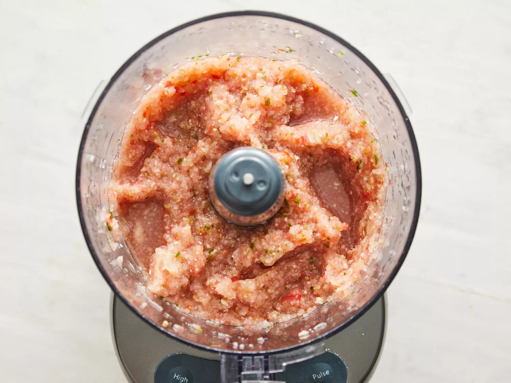
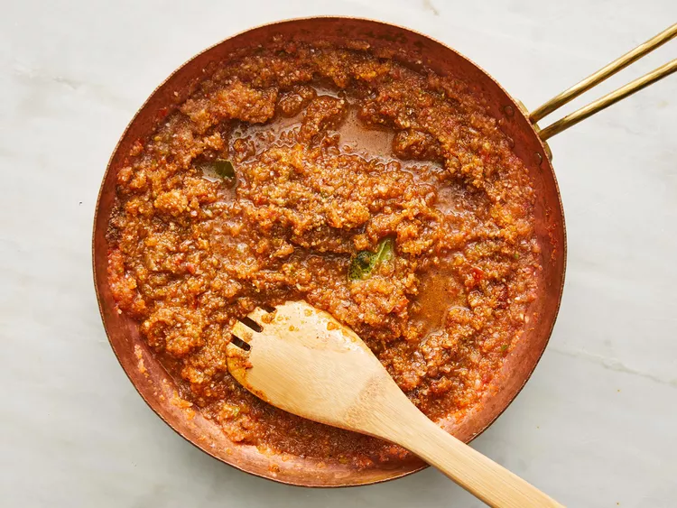
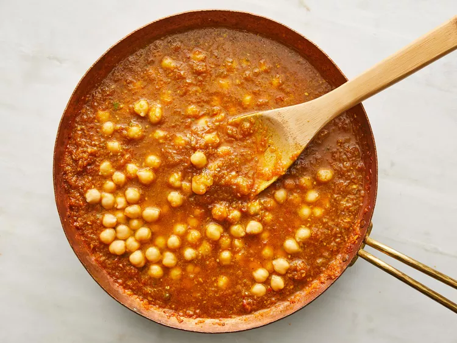

Home
Chana Masala(Savory Indian Chickpeas)

This dish of spiced chickpeas is everything you could hope for in an affordable pantry supper. Serve over rice or with naan or pita bread, or pile into baked white or sweet potatoes.
"I LOVE this dish, its become a staple in my house and I eat it almost every week," said one Allrecipes user.
Ingredients
- 1 onion, chopped
- 1 tomato, chopped
- 1 (1-inch) piece fresh ginger, peeled and chopped
- 4 cloves garlic, chopped, or more to taste
- 1 green chile pepper, seeded and chopped (Optional)
- 3 tablespoons olive oil
- 2 fresh bay leaves
- 1 teaspoon chili powder
- 1 teaspoon coriander powder
- 1 teaspoon garam masala
- ½ teaspoon turmeric powder
- 1 pinch salt to taste
- water, as needed
- 1 (15 ounce) can chickpeas
- 1 teaspoon fresh cilantro leaves, for garnish, or more to taste
Directions
- Grind onion, tomato, ginger, garlic, and chile pepper together in a food processor into a paste.

Credit: Dotdash Meredith Food Studios
- Heat olive oil in a large skillet over medium heat. Fry bay leaves in hot oil until fragrant, about 30 seconds. Pour the paste into the skillet and cook until the oil begins to separate from the mixture and is golden brown in color, 2 to 3 minutes. Season the mixture with chili powder, coriander, gram masala, turmeric, and salt; cook and stir until very hot, 2 to 3 minutes.

Credit: Dotdash Meredith Food Studios
- Stir just enough water into the mixture to get a thick sauce; bring to a boil and stir chickpeas into the sauce. Reduce heat to medium and cook until the chickpeas are heated through, 5 to 7 minutes. Garnish with cilantro.

Credit: Dotdash Meredith Food Studios
Home